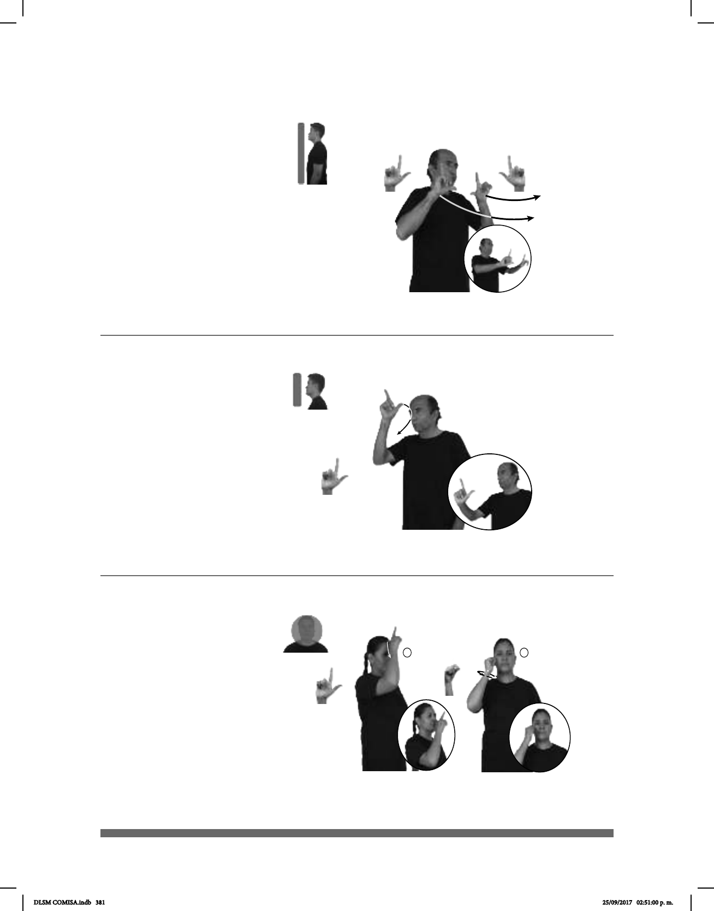

381
(L-122)
Seña: SS
L.1
Palmas hacia afuera.
A la altura del pecho.
Recto hacia el frente.
Labios
soplando.
1. sust. m. Exceso de
adorno o de riqueza. 2. adj. Que es
ostentoso, que está hecho con
exceso de adorno o de riqueza.
Seña: SC: I. y II. SM
I. L.1; II. P.11
I. y II. Palma hacia la
izquierda.
I. La mano se desliza
sobre la nariz; II. Sobre la mejilla.
I. Recto.
sust. m. Pequeña
mancha oscura que sale en algunos
lugares de la piel.
Seña: SM
L.1
Palma hacia la
izquierda.
De la frente a la nariz.
La mano se mueve
formando un arco hacia el frente.
1. sust. f. Cuerpo
Estación del STC Metro de la línea
2.
(L-123)
(L-121)
____muy
ESE CARRO NUEVO LUJOSO
Ese carro nuevo es muy lujoso.
NUESTRA CITA LUGAR TAXQUEÑA
área
Nuestra cita es en Taxqueña.
pro-ELLA TENER LUNAR BONITO
Ella tiene una lunar bonito.
DLSM COMISA.indb 381 25/09/2017 02:51:00 p. m.